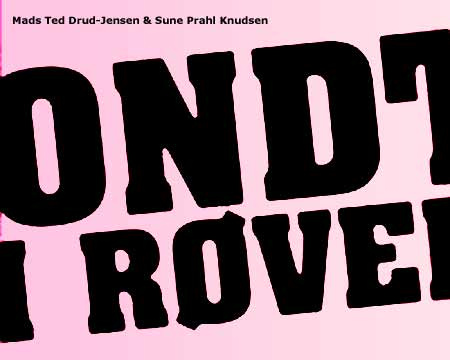

| dunst Recommends: | 9. September 2005 |
 |
|
| Ondt i receptionen. Ekstravagant og helt low life reception i anledning af udgivelse af bøssebogen "Ondt i røven" smuglæs i bogen før din nabo. Drik øl på andres regning og ryst røven til batteridrevet musik. Det sker på Kafe Knud, Skindergade 21, Fra kl. 17:00 til Pissesent. Alle er velkomne - undtagen gud og hver mand. Performance: Dennis Agerblad. DJ's: Stimulundia og Miss Fish. |
|
|
Hvad hanler bogen om? Se indslag i Brunch på TV2-Lorry her: tv2lorry.dk |
|
| Tilbage |